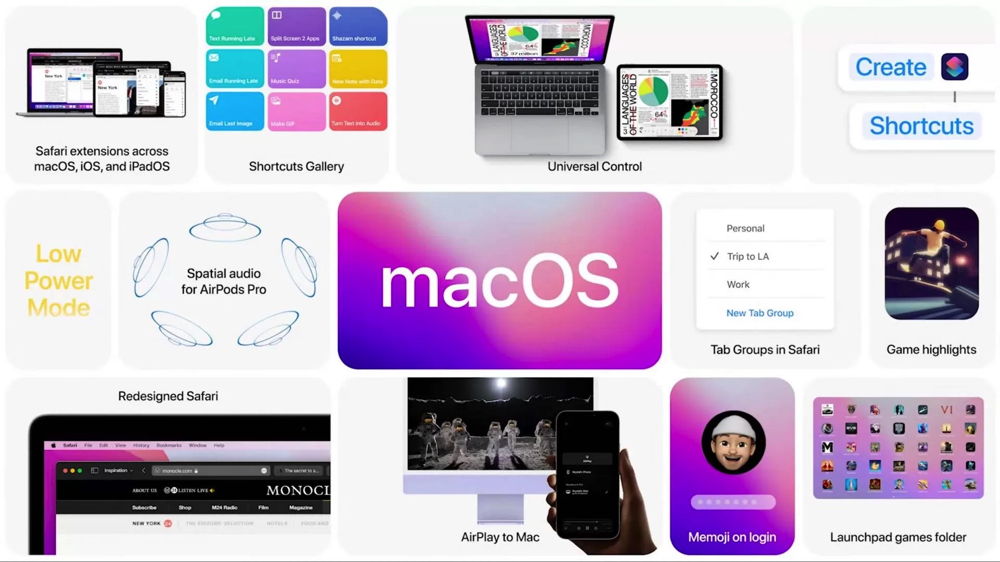
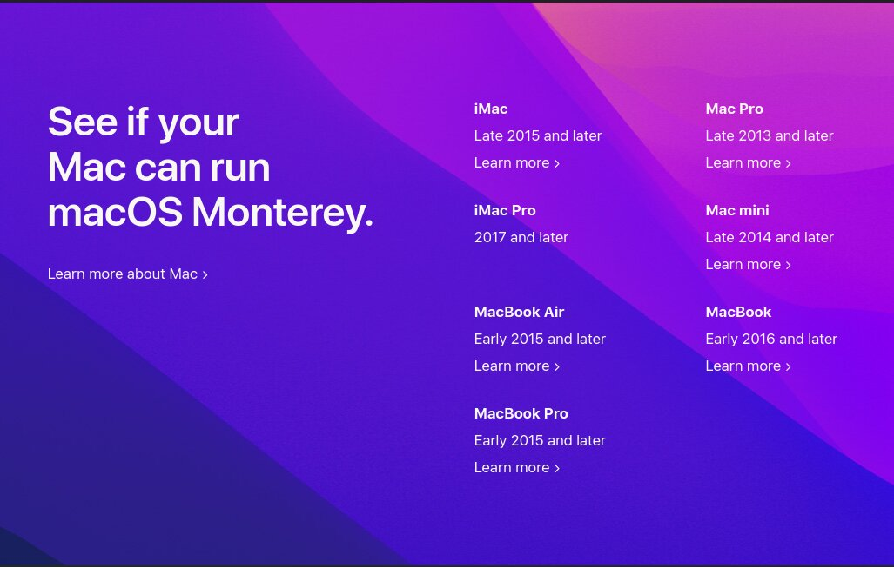
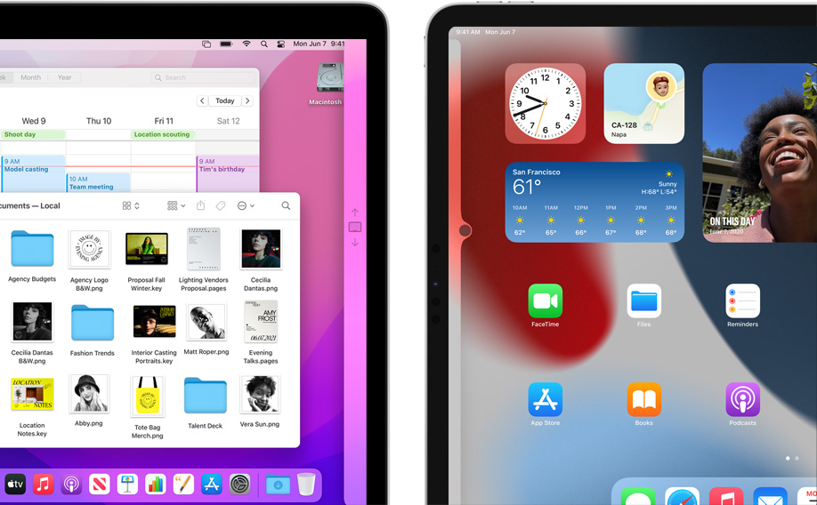
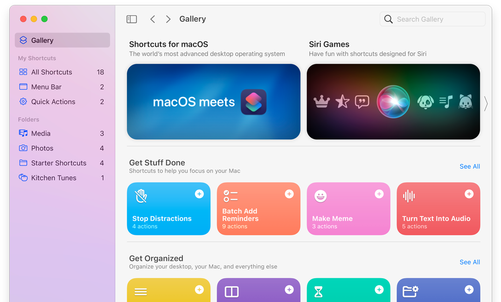
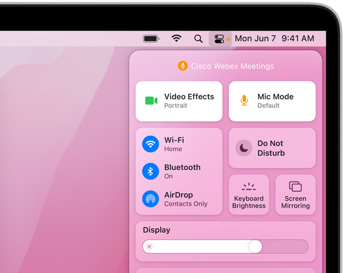
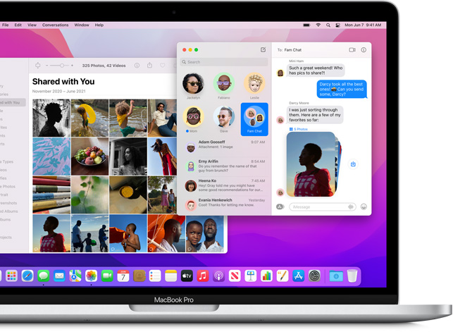
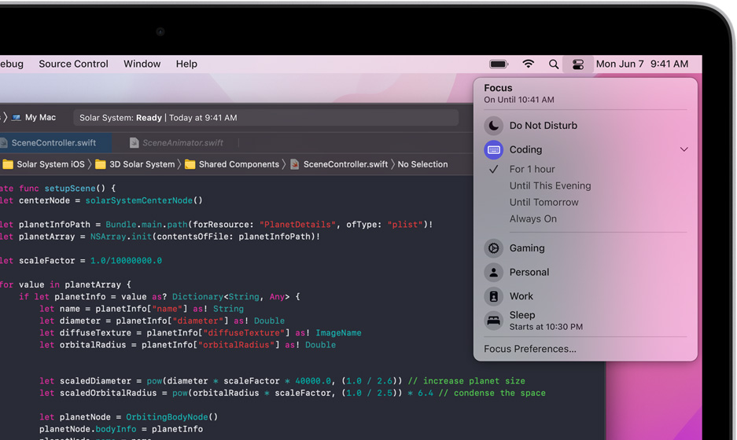
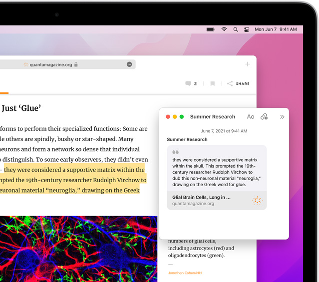
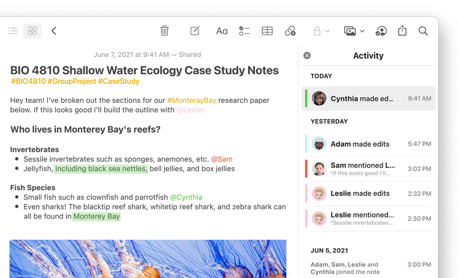

السلام عليكم ورحمة الله وبركاتة اعلنت اليوم ابل عن اصدار الماك الجديد تحت اسم macOS 12 Monterey في مؤتمر WWDC للمطويرن وهو تحديث فيه عده تحسينات جديده لنظام الماك

قبل الحديث عن التغييرات, هناك شيء مهم وهو قائمة الاجهزه المدعومة

في ماك Big sur كانت هناك اجهزه ماك بوك من 2013 مدعومة لكن في ماك مونتيري الجديد, جميع الاجهزه من عام 2014, الا الماك برو مما يعني انه تم توقف دعم الجيل الثالث بشكل شبه اكيد, وربما قد يؤثر على الجيل الرابع ايضا. واكيد بلا شك ان النظام سوف يحتاج ل ssd, لا نظام ماك قابل للاستخادم بعد هاي سييرا بدون ssd.
ايضا ملحوظة, تم انهاء دعم ماك هاي سييرا, مما يعني انه لا يوجد اي اصدار ماك مدعوم, يدعم كروت انفيديا حاليا
التغييرات:
اولا الخلفيه الجديدة
من اكثر الاشياء التي يتطرق لها الجميع هي خلفيه الماك عكس السنة الماضيه الظاهر ان الماك سيكون له خلفيه موحدة, وكالعاده هناك وضع داكن و فاتح على حسب الوقت على جهازك
FaceTime الجديد
اعلنت ابل عن ميزات كبيرة لبرنامج FaceTime الشهير
اهمها امكانيه مشاهده الافلام و مسلسلات مع الاخرين باستخدام مكالمات مع تغيير درجه الصوت تلقائيا, لجعل التحدث سهل اثناء المشاهده وايضا تدعم نفس الشيء للموسيقى
ايضا بامكانك مشاركه شاشة جهازك وايضا اصبح بامكانك استخدم رؤية الاشخاص على شكل مربعات
ايضا اصبح بامكانك استخدام وضع البورترية في مكالمات الفيديو اذا كان لديك جهاز ماك M1, والان اصبح بامكانك وضع روابط لمكالمات facetime ويمكنك استخدام هذه الروابط لفتح فيستايم من خلال المتصفح على اندرويد او ويندوز/linux
ايضا اصبح بامكانك تفعيل الصوت المحيطي في facetime لاعطاء صوت واقعي اكثر في المكالمات على برنامج facetime
Universal Control

اعلنت ابل عن ميزه Universal Control الجديدة, التي تمكنك من نقل الماوس والكبيورد بين الاجهزه بمجرد وضع الجهاز الثانوي بجانب الجهاز الاول ويمكن ايضا نقل الملفات والصور
اضافة دعم الاختصارات للماك 
تم اضافة ميزه الاختصارات على الايفون في ios 14, الان بامكانك استخدامها على الماك ايضا, لائتمته اشياء تقومه بكثرة او توصيل عدة برامج
تحسينات للخصوصية
ابل لديها اهتمام جيد في الخصوصية, ومع هذا التحديث اصبح بامكانك رئية البرامج التي تستخدم المايكروفون والكاميرا

ايضا تم تحديث برنامج البريد, لاخفاء عنوان ال IP الخاص بك عندما تفتح البريد, لكن هذا يعني انك ستمرر محتوى البريد من خلال سيرفرات ابل على الاغلب, مما يعطي ابل فكره عن ما محتوى البريد, حتى لو لم يكن على icloud.
تحديثات لبرنامج Messages
الان بامكانك الوصول للصور والروابط التي تم مشاركتها معك على iMessage من خلال برنامج الصور او متصفح سفاري, او حتى apple news/tv/podcasts ايضا الان عند ارسال عده صور سيتم تجميعها بشكل مرتب اكثر

متصفح سفاري
تم عمل تحديثات كبيرة لتصميم متصفح سفاري تم تصغير حجم شريط النوافذ وايضا اصبح ياخذ لون الصفحه التي تتصفحها, وتم دمج شريط النوافذ مع شريط الرابط/البحث
ايضا اصبح بامكانك انشاء مجموعه من نوافذ, سواء من النوافذ المفتوحه الان او مجموعة فارغه, وسيتم مزامنتها مع اجهزتك الاخرى
وضع التركيز
تم اضافه وضع تركيز جديد للماك, لمساعدتك على التركيز على عملك, مع ابقاء التنبيهات التي تريدها فقط وسيتم اقتراح لك بعض الخيارات الجاهزه, او بامكانك عمل اعداداتك الخاصة 
وفي حاله تفعيلك لوضع التركيز سيظهر لدى المستخدمين الاخرين على imessage وفي حاله تفعيل وضع التركيز على جهاز, سيتم تفعيله على كامل اجهزتك الباقية.
تطبيق الملاحظات
اصبح بامكانك انشاء ملاحظات بالسرعه بستخدام ميزه quick notes

وايضا اصبح بامكانك روئيه النشاطات والتغييرات التي عملها الاشخاص الاخرين في الملاحظات المشاركة
 و ايضا تم دعم اضافات تاقات للملاحظات
استخدام Airplay على اجهزه الماك
اصبح بامكانك ارسال المحتوى من اجهزه الايفون الى الماك, او حتى استخدام الماك كسماعة

ميزه Live Text لاستخارج النص من الصور ايضا بامكانك اظهار مكان الصورة
اشتراك +iCloud
اشتراك جديد من ابل ليقدم لك خدمات اضافية, اولها هي ميزة iCloud Private Relay وهي ميزة تشبه ال vpn, بحيث تقوم بخفاء عنوان ال ip الحقيقي الخاص بك, لكنها متقدمه اكثر بحيث بدلا من استخدام سيرفر واحد فقط, ستستخدم سيرفرين لاعاده توجيه الاتصال الخاص بك, تقريبا مثل متصفح Tor لكنه ليست قريبة ابدا من نفس مستوى الامان
خدمة Hide My Email هذه الخدمة تمكنك من انشاء بريد مخصص لكل موقع, وسوف يقوم باعاده توجيه كل الرسائل لحسابك الاساسي, من اجل اخفاء بريدك الحقيقي من الموقع, تقدم شيء قريب لخدمة
موعد توفر ماك مونتيري
سوف يكون صدور النظام العامه في الخريف من هذا العام, تم اصدار نسخه تجريبية للمطورين ونسخة تجريبية للعامه سيتم اطلاقها الشهر القادم.
عادة تحتاج لحساب مطورين للحصول على نسخه التجريبية للمطورين لكن بسبب برنامج gibmacos بامكانك الحصول عليها الان! بدون الحاجه لاي حساب. فقط اضغط c واختر رقم 4 وستجد النسخه متوفره !
شكرا لكم على متابعتكم. ودعمكم لنا